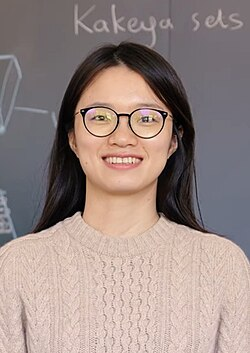

Hong Wang | |
|---|---|
王虹 | |
 Wang in 2025 | |
| Born | 1991 (age 34–35) Guilin, Guangxi, China |
| Education | |
| Known for | Solving the Kakeya conjecture in three dimensions |
| Awards | Maryam Mirzakhani New Frontiers Prize (2022) Salem Prize (2025) Ostrowski Prize (2025) Sadosky Prize (2026) Clay Research Award (2026) New Horizons in Mathematics Prize (2026) Fields Medal (2026) |
| Scientific career | |
| Fields | Mathematics |
| Institutions | |
| Thesis | A restriction estimate in (2019) |
| Larry Guth | |
| Website | sites |
.jpg){kind=link}
Hong Wang (Chinese: 王虹; pinyin: Wáng Hóng; born 1991) is a Chinese mathematician known for her research in Fourier analysis and geometric measure theory. She was awarded the Maryam Mirzakhani New Frontiers Prize in 2022, the Salem Prize in 2025, and the Fields Medal in 2026.
Early life and education
Wang was born in Guilin, Guangxi, China, in 1991. Her parents are both teachers at a secondary school in Pingle County. She skipped two grades during primary school. In 2004, she began attending Guilin High School. In 2007, Wang, then 16 years old, gained early admission to Peking University to study earth sciences after attaining a Gaokao score of 653. After a year, she changed her major to mathematics.[1]
Wang graduated from Peking University with a Bachelor of Science degree with a major in mathematics in 2011.[2] As an undergraduate, she was a classmate of Yu Deng and Yunqing Tang.[3][4] She received two graduate credentials in France in 2014: a Diplôme d'Ingénieur (lit. 'engineer's degree') from École polytechnique and a Master of Science degree from Paris-Sud University.[5][6] In 2019, she earned her Ph.D. in mathematics from the Massachusetts Institute of Technology (MIT), with Larry Guth as her doctoral advisor.[5]
Career
After completing her doctorate in 2019, Wang was a postdoctoral member of the Institute for Advanced Study in Princeton, New Jersey, from 2019 to 2021. She served as an assistant professor of mathematics at the University of California, Los Angeles from 2021 to 2023.[7]
Wang moved to the Courant Institute of Mathematical Sciences at New York University (NYU) as an associate professor in 2023.[7] In September 2025, she became a full professor at NYU, while also being appointed as a permanent professor of mathematics at the Institut des hautes études scientifiques (IHES) in France.[8][9] In April 2026, NYU named Wang a Silver Professor of Mathematics, an endowed professorship.[10]
Academic research
Wang's research is in harmonic analysis and geometric measure theory, particularly the family of Kakeya-type problems connecting Fourier analysis with incidence geometry, partial differential equations, combinatorics and number theory.[7] As a doctoral student, she developed new approaches to the Fourier restriction problem using incidence geometry and contributed to work on the Falconer distance problem. In 2019, Wang, Larry Guth, and Ruixiang Zhang proved the two-dimensional case of the local smoothing conjecture. In 2023, Wang and Kevin Ren proved the two-dimensional Furstenberg set conjecture.[7]
One of Wang's best-known research was conducted with Joshua Zahl on the three-dimensional Kakeya conjecture. In 2022, they proved the conjecture for a class known as sticky Kakeya sets, eliminating a major family of possible counterexamples.[11] In February 2025, they posted a 127-page proof of the full conjecture in three dimensions, establishing that every Kakeya set in has both Hausdorff and Minkowski dimension three.[12]
The proof combined the earlier sticky-set analysis with a multiscale study of "grainy" configurations of thin tubes, iteratively improving known lower bounds until the full dimension was obtained.[12][7] The result is considered foundational because Kakeya estimates are closely connected to major problems in harmonic analysis, including the Fourier restriction and local smoothing conjectures.[12]
Awards
Wang was a 2022 recipient of the Maryam Mirzakhani New Frontiers Prize, given "for advances on the restriction conjecture, the local smoothing conjecture, and related problems".[5][13][14]
Wang was a 2025 recipient of the Salem Prize, given "for her role in solutions to major open problems in harmonic analysis and geometric measure theory."[15][16] She was awarded the 2025 ICCM Gold Medal of Mathematics from the International Consortium of Chinese Mathematicians, given to "outstanding mathematicians of Chinese descent under the age of 45 for their achievements in the research of pure and applied mathematics, and for their great contributions to the development of mathematics."[17] She was also a 2025 recipient of the Ostrowski Prize, given for her "influential work in harmonic analysis, solving central problems in the field like the Kakeya set conjecture in three dimensions or the restriction conjecture in higher dimensions".[18][19]
In 2026, she was awarded the Sadosky Prize from the Association for Women in Mathematics, given "for solving central problems in harmonic analysis through the introduction of ground-breaking ideas. In particular, for substantial contributions to the Fourier restriction problem, the Kakeya conjecture, and geometric measure theory".[20] She also received the Clay Research Award.[21]
On 23 July 2026, Hong Wang was awarded the Fields Medal by the International Mathematical Union, alongside Yu Deng, John Pardon, and Jacob Tsimerman, for her contributions to harmonic analysis and geometric measure theory, including the proof of the three-dimensional Kakeya conjecture.[22][23] She was the first Chinese woman to win the Fields Medal.[24]
References
- ^ 华人女数学家提前锁定菲尔兹奖？王虹127页破解几何世纪难题，陶哲轩盛赞 [Wang Hong solved a century-old geometry problem in her 127-page work, praised by Terence Tao]. The Paper. 28 February 2025.
{{cite web}}: CS1 maint: deprecated archival service (link) - ^ Li, Hongce (26 May 2025). "Mathematician Wang Hong appointed as a tenured professor at the Institute of Advanced Studies in Law". Science and Technology Daily (in Chinese). Retrieved 18 July 2026.
- ^ "Wang Hong and Deng Yu become first Chinese nationals to win Fields Medal". South China Morning Post. 23 July 2026. Archived from the original on 23 July 2026. Retrieved 23 July 2026.
- ^ 滚动播报 (7 November 2025). 她成为首位摘获数论最高奖的华人女数学家，毕业于上海中学，是王虹本科同学. finance.sina.com.cn. Retrieved 18 July 2026.
- ^ a b c "MIT mathematicians awarded 2022 New Frontiers Prize". MIT News. 9 September 2021. Archived from the original on 9 September 2021.
- ^ 跟随自己的兴趣和感觉 专访王虹校友 [Follow your own interests and feelings. Interview with alumnus Wang Hong]. sohu.com. 1 November 2023.
{{cite web}}: CS1 maint: deprecated archival service (link) - ^ a b c d e Wolchover, Natalie (23 July 2026). "Living Fully in the Math World Means Threading the Needle". Quanta Magazine. Archived from the original on 23 July 2026. Retrieved 24 July 2026.
- ^ "Hong Wang joins IHES as Permanent Professor of Mathematics". Institut des Hautes Études Scientifiques. 27 May 2025. Archived from the original on 27 May 2025. Retrieved 24 July 2026.
- ^ "Hong Wang, Permanent Professor at IHES, awarded the 2026 Fields Medal". Institut des Hautes Études Scientifiques. 23 July 2026. Archived from the original on 24 July 2026. Retrieved 24 July 2026.
- ^ "Hong Wang, Russel Caflisch, Sanjeev Khanna Receive Silver Professorships". Courant Institute of Mathematical Sciences. New York University. 2 April 2026. Archived from the original on 21 May 2026. Retrieved 24 July 2026.
- ^ Cepelewicz, Jordana (11 July 2023). "New Proof Threads the Needle on a Sticky Geometry Problem". Quanta Magazine. Archived from the original on 24 July 2026. Retrieved 24 July 2026.
- ^ a b c Howlett, Joseph (14 March 2025). "'Once in a Century' Proof Settles Math's Kakeya Conjecture". Quanta Magazine. Archived from the original on 24 July 2026. Retrieved 24 July 2026.
- ^ "Mathematician Hong Wang wins New Frontiers Prize". University of California, Los Angeles. 9 September 2021. Archived from the original on 9 September 2021.
- ^ "Laureates". Breakthrough Prize. Archived from the original on 9 September 2021.
- ^ "2025 Salem Prize Winners". Institute for Advanced Study. 27 October 2025. Archived from the original on 5 November 2025. Retrieved 29 October 2025.
- ^ "Hong Wang Awarded Ostrowski Prize, Salem Prize, and ICCM Gold Medal of Mathematics". NYU Courant Institute School of Mathematics, Computing, and Data Science. 24 November 2025. Archived from the original on 20 April 2026. Retrieved 30 June 2026.
- ^ "Hong Wang Awarded Salem Prize and ICCM Gold Medal of Mathematics". Courant Institute of Mathematical Sciences. 30 October 2025. Archived from the original on 15 November 2025. Retrieved 20 November 2025.
- ^ "The prize and the prize winners". Ostrowski Foundation. Archived from the original on 11 September 2025. Retrieved 20 November 2025.
- ^ "Citation for Hong Wang" (PDF). Ostrowski Foundation. Retrieved 20 November 2025.
- ^ "AWM Sadosky Research Prize in Analysis 2026". Association for Women in Mathematics. Archived from the original on 20 November 2025. Retrieved 30 October 2025.
- ^ "Clay Research Award 2026". Archived from the original on 19 April 2026. Retrieved 15 April 2026.
- ^ "Fields Medals 2026". www.mathunion.org. Archived from the original on 23 July 2026. Retrieved 23 July 2026.
- ^ Castelvecchi, Davide (23 July 2026). "Rising stars of mathematics awarded prestigious 2026 Fields Medal". Nature. doi:10.1038/d41586-026-02169-1. ISSN 1476-4687. PMID 42493565.
- ^ "In a first, Chinese woman wins the prestigious Fields Medal". 23 July 2026.